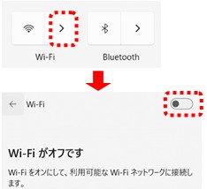
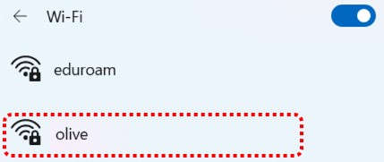
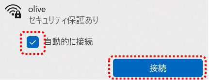
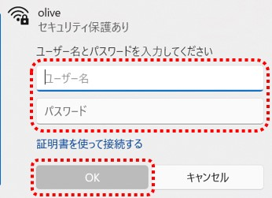
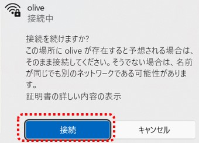

利用マニュアル – 無線LAN（olive）
無線LAN (olive)は、ワイヤレスネットワークのSSID 一覧から「olive」を選択して、大学のユーザー名とパスワードを入力するだけで接続できます。(Androidは別途設定が必要です。)
手順の詳細は、ご利用の機器のOSをクリックしてご確認ください。
利用マニュアル (Windows)
- ノートPCにワイヤレススイッチがある場合はオンにします。詳しくはノートPCの取扱説明書を参照してください。
- タスクバーの通知領域にある[ネットワーク]アイコンを選択します。
- アクションセンター画面が表示されるので、Wi-Fi の状態を確認します。Wi-Fiの「>」をクリックすると、Wi-Fi のON/OFF のスイッチが表示されるので、OFF になっている場合はONに切り替えます。

- 周囲にあるワイヤレスネットワークのSSID 一覧が表示されるので、「olive」を選択します。

- ［自動的に接続］のチェックボックスにチェックを入れ［接続］をクリックします。

- 認証画面が表示されるので、大学のユーザ名とパスワードを入力し、[OK]をクリックします。

- 以下の接続確認の画面が表示された場合は、[接続]をクリックします。

利用マニュアル (macOS)
省略
利用マニュアル (iPhone/iPad)
省略
利用マニュアル (Android)
省略